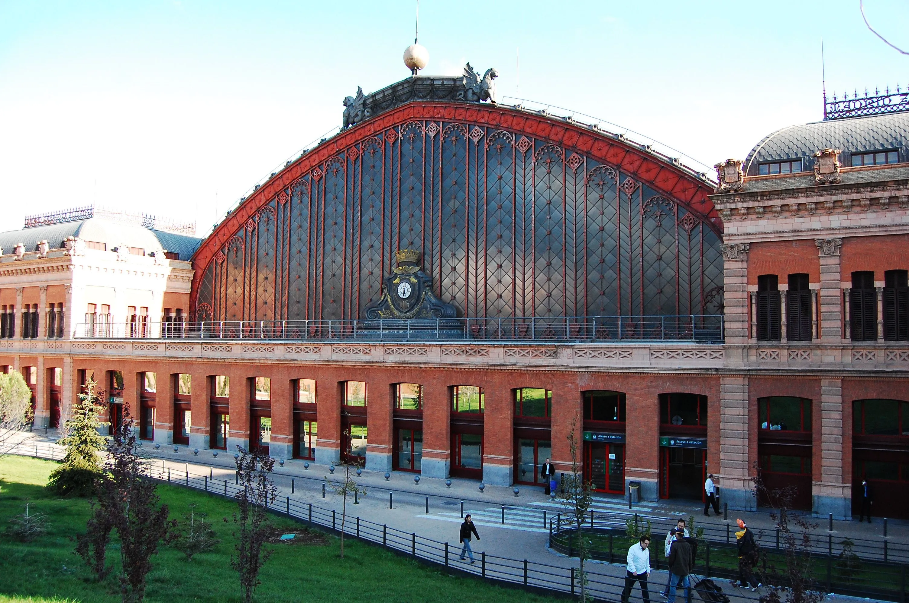
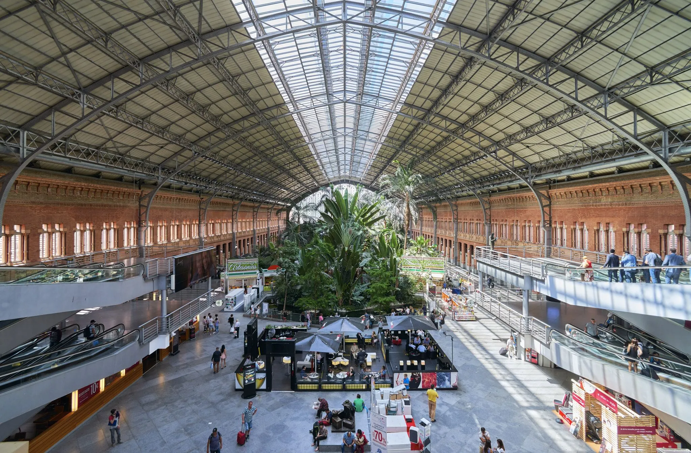

Témoin d'une Époque de Renouveau et de Résilience


Un Théâtre Vivant

En 1991, la gare d'Atocha à Madrid était un mélange fascinant de modernité et d'histoire, un lieu emblématique au cœur de la capitale espagnole. Avec ses vastes halls et sa structure en acier imposante, la gare était bien plus qu'un simple point de départ pour les voyageurs ; c'était un théâtre vivant où se croisaient des histoires et des destins variés. Les voyageurs se pressaient sous les hauts plafonds, portant leurs valises et leurs espoirs, chacun avec son propre récit à écrire. L'ambiance animée était ponctuée par le bruit des pas sur le sol en marbre poli et le bourdonnement des conversations dans différentes langues. Le parfum enivrant du café fraîchement moulu flottait dans l'air, invitant les passants à une pause avant leur départ imminent.
Lumière et Résilience
Les grandes baies vitrées laissaient filtrer une lumière douce, baignant les bancs de la gare où les voyageurs attendaient, certains impatients, d'autres nostalgiques, observant les tableaux d'affichage des départs et des arrivées, scrutant le prochain train pour les emmener vers de nouvelles aventures ou les ramener chez eux.
Au-delà de son aspect fonctionnel, la gare d'Atocha était un symbole de résilience. Quelques années auparavant, en 1985, elle avait été le théâtre d'une tragédie lorsque des bombes y avaient explosé. Mais en 1991, elle avait retrouvé son dynamisme, témoignant de la capacité de la ville et de ses habitants à se relever, à avancer malgré les cicatrices du passé.